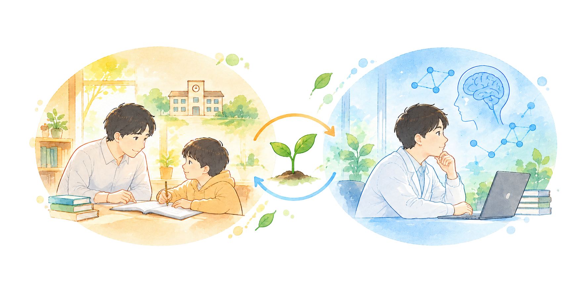

人を理解し環境を考える
私は「思いやり」を大切にしています。
ここでいう思いやりとは、単に人に優しくすることだけではありません。自分とは異なる人が、何を見て、何を感じ、どこで困っているのかを想像し、その人の立場から物事を考えようとすることです。
誰にでも、何かがうまくいかず失敗してしまうことや、自信を失い落ち込んでしまうことがあると思います。そんなとき、原因は必ずしも本人の能力や努力だけにあるわけではありません。今いる場所や人間関係、設備や制度といった周囲の環境が変われば、できることも変わります。
私は、人の困りごとを「その人だけの問題」として捉えるのではなく、「人と環境との関係の中で生じるもの」として捉えたいと考えています。そのためには、一人ひとりが周囲の世界をどのように認識しているのかを理解するとともに、その人を取り巻く環境や周囲との関わり方にも目を向けることが大切だと思っています。
このような理念のもと、私は教育と研究の両面から、思いやりのある社会の実現を目指して活動しています。
教育について
一人ひとりに合った学び方や居場所を考える
私はこれまで、学校の教員や塾講師、家庭教師事業の代表として、さまざまな子どもの学びに関わってきました。
教育において大切なのは、すべての子どもに同じ学び方やペースを求めることではなく、一人ひとりの特性や状況に応じた学び方を考えることだと思っています。
また、学校に通うことそのものがつらい子どももいます。教室という環境が合わなかったり、集団の中に安心できる居場所を見つけられなかったりすることもあります。
しかし、学校に通っていないことや、周囲と同じようにできないことが、その人の価値や可能性を決めるわけではありません。学校以外にもさまざまな学び方や居場所があり、一人ひとりが自分に合った環境で、自分のペースで学び、成長できることが大切だと考えています。
「なぜできないのか」だけではなく、「どうすれば安心して学び、自分らしく過ごせるのか」。
子ども自身に変化を求めるだけでなく、周りの環境や関わり方を考えること。それが、私が教育で大切にしていることです。
研究について
人の認知の仕組みを科学的に理解する
現在、私は認知心理学を専門に、人がどのように情報を知覚し、記憶や知識を利用して判断・行動しているのかを研究しています。
特に、人がものを探すときの「視覚探索（しかくたんさく）」と呼ばれる行動に関心があり、心理学実験などの手法を用いて、その背後にある認知の仕組みを明らかにしようとしています。
人がどのように世界を認識し、行動しているのかを解明することは、それ自体が科学的に重要な問いです。同時に、こうした基礎的な知見は、人がどのような環境で迷い、困り、どのような支援や情報があれば行動しやすくなるのかを考えるための手がかりにもなります。
人の認知を科学的に理解することで、一人ひとりの特性に配慮した、より分かりやすく、安心して暮らすことのできる社会を目指していきたいと考えています。